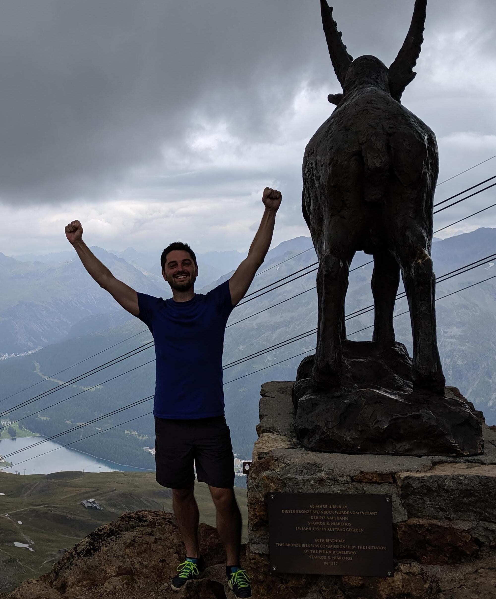

Biomolecular design through latent reasoning with RFD4-Proteina
Preprint (2026)
I am a senior research scientist at NVIDIA, working on generative modeling within the Fundamental Generative AI Research Group.
I work on probabilistic machine learning, focusing on generative models and sampling methods. I am interested in methodological developments as well as applications in different scientific domains.

Preprint (2026)
arXiv (2026)
bioRxiv (2026)
NeurIPS 2026
ICLR 2026 (oral, top 1.1%)
ICLR 2026 (top 0.01% by average reviewer score)
Machine Learning and the Physical Sciences Workshop (NeurIPS 2025)
AI4Science Workshop (NeurIPS 2025)
DELTA Workshop (ICLR 2025)
ICML (2025)
ICML (2025)
ICLR 2025 (oral, top 1.8%)
ICLR 2025 (oral, top 1.8%)
ICLR 2025
ICLR 2025
Machine Learning for Structural Biology Workshop (NeurIPS 2023)
Generative AI and Biology Workshop (NeurIPS 2023)
ICML 2023
AISTATS 2023
ICML 2022 (spotlight)
AABI 2020 (contributed talk)
NeurIPS 2020
AISTATS 2020
I obtained my PhD in Computer Science from UMass Amherst in 2023, supervised by Justin Domke.
During my PhD, I was grateful to intern at VantAI (New York, summer 2023) with Luca Naef and Michael Bronstein; Google DeepMind (London, summer 2022) with Andriy Mnih and George Papamakarios; Microsoft Research (Cambridge UK, summer 2021) with Cheng Zhang, Emre Kiciman and Miltos Allamanis; and Amazon AWS (New York, summer 2018) with Bing Xiang and Ramesh Nallapati.
Before my PhD, I also did some work on planning. Outside research, I try to play tennis.
Publication chair, AISTATS 2023
Reviewer for JMLR and TMLR